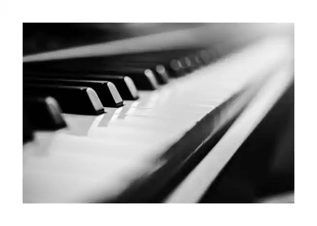
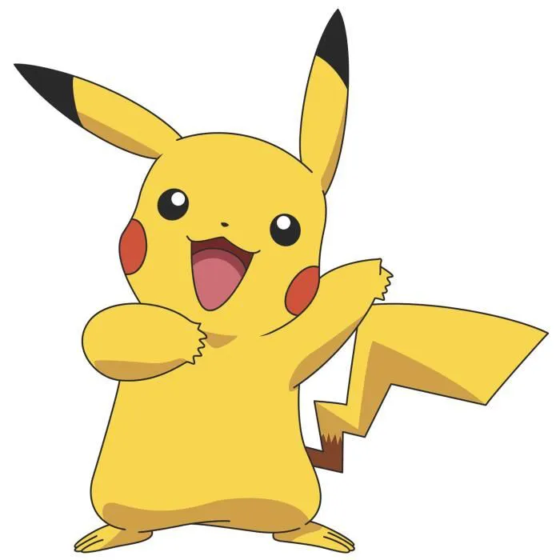

Présentation de moi-même
- La raison de ma venue est un choix très réfléchi, n’ayant fait que très peu de sciences durant mon lycée.
Ainsi que peu de connaissances dans le domaine, je voulais venir sans grand espoir d’être prise dans la formation.
De plus le manque de connaissances inclut une charge de travail personnel plus importante que pour d’autres personnes
possédant déjà des bases, le milieu majoritairement masculin a aussi été un de mes points de réflexion.
Ma décision a été prise prenant en compte le fait que les métiers de réseaux télécommunication se trouvent être
essentiels de nos jours et dispose de nombreuses possibilités de carrière.
-
Cette formation cultive mon intérêt pour la télécommunication et le réseau que je découvre au fil de mon parcours,
j’y apprends beaucoup de nouvelles choses plus ou moins proches de mes attentes avant de venir ici. Mon choix pour
le parcours de l’an prochain n’est pas encore décidé, je pense avoir un manque de connaissances de clarté sur
l’entièreté de la formation de cette année et l’an prochain pour faire un choix assuré et définitif.
Je souhaiterais néanmoins avoir la possibilité de faire une alternance l’an prochain si j’en ai la possibilité
je pense que cela me permettrait de concrétiser mes connaissances ainsi que mes projet d’avenir future.
Je ne pense pas continuer sur une école d’ingénieurs , ni autre formation poussant mon BUT,
je pense entrer sur le marché du travail et évoluer dans une entreprise.
Mes hobbys
la musique
Un de mes hobbys est la musique, j’ai commencé par la guitare et en ai joué pendant 2ans et demi cela m’a permis de
commencer la musique et ses bases. J’ai commencé en parallèle le piano, j’ai commencé à l’apprendre en autodidacte en
jouant des morceaux que je choisissais étant principalement des musiques de pop, ou des bandes originales de film ,
ou de l’improvisation. Après plusieurs années apprendre seule et l’arrêt de la guitare j’ai donc intégré une école de
musique. J’y suis restée un an et demi, j’ai pu découvrir beaucoup de nouvelles choses que je ne pouvais pas découvrir
seule , j’ai dû malheureusement arrêter car les demande de travail ne coïncidait plus avec mon travail scolaire.
Je continue néanmoins d’en jouer pour mon plaisir et celui de mes proches lors de mon temps libre.
le sport
Un autre de mes centres d’intérêt est le sport. J’ai pu commencer à pratiquer le sport lors de ma jeunesse.
J’ai en effet fait de l’équitation pendant 8ans , j’ai ensuite arrêté pour pratiquer de l’athlétisme qui fut une vraie
passion pour moi. Cela a représenté une partie majeure de ma construction de moi-même ,ça m’a permis de prendre
confiance en moi et a me faire confiance. J’ai pu expérimenter ainsi la compétition, ce qui a été pour moi la partie
la plus « amusante » du sport , en effet la compétions permet de voir ses compétences s’améliorer avec des résultats
visibles ainsi qu’un sentiment de satisfaction face au travail mené. L’arrêt de cette passion a été assez brut,
qui a été causé par une blessure qui m’a forcé à finir ma saison de compétition puis qui a mené a mon retrait de ce
sport.
les jeux vidéos
Bien que le fait de jouer ait souvent classé masculin, cela fait partie d’activité auquel je prends plaisir à passer du
temps. J’ai commencé à jouer jeune avec la DS , sur laquelle j’ai beaucoup joué et principalement à des jeux comme Pokémon.
J’ai ensuite eu mon premier ordinateur sur lequel j’ai pu jouer à des jeux en ligne qui a cette époque m’amusait beaucoup.
J’ai ensuite arrêté de joué sur console ou ordinateur pour me concentrer sur les études car ma passion pour les jeux
devenait envahissante. Néanmoins j’ai récemment fait l’acquisition d’une console pour mon plus grand plaisir, j’aime
particulièrement les jeux d’aventure solo préférant jouer seuls avec histoire plutôt qu’avec plusieurs joueurs.
Je ne joue pas néanmoins tous les jours , et cela en partit car malgré mon intérêt pour les jeux cela n’est pas mon
domaine de prédilection, et aussi pour pouvoir travailler.

